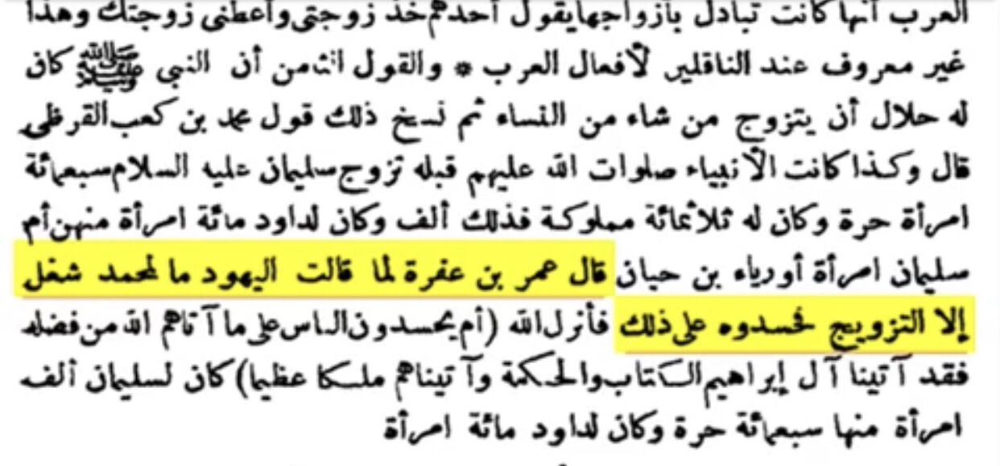
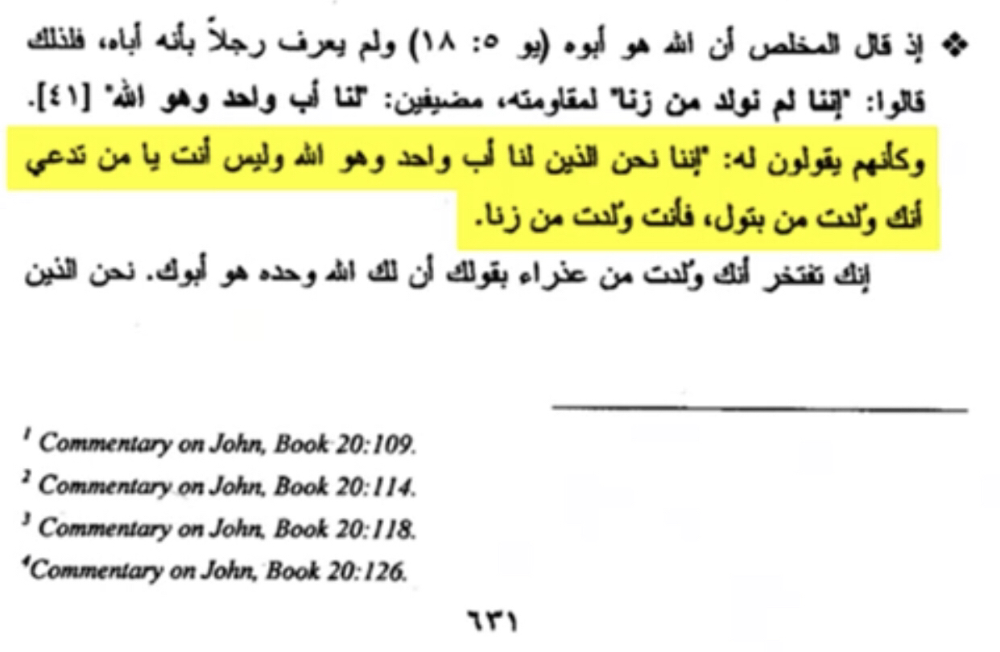
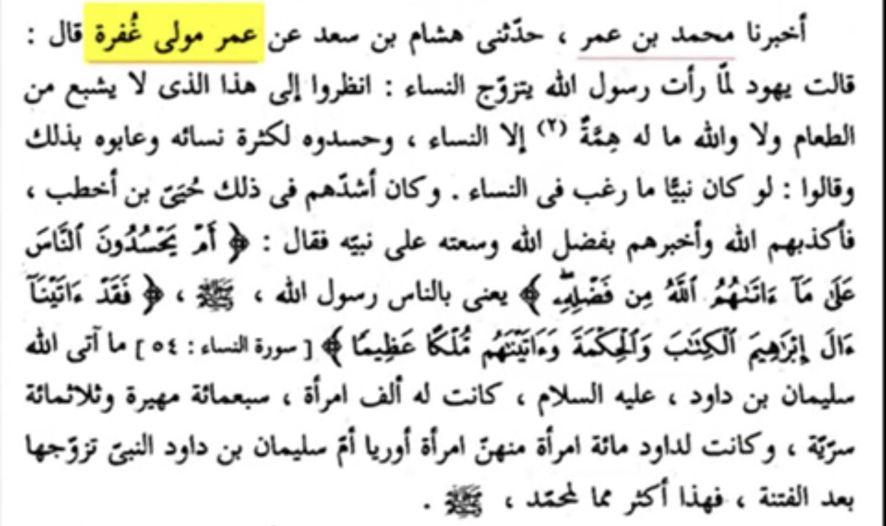
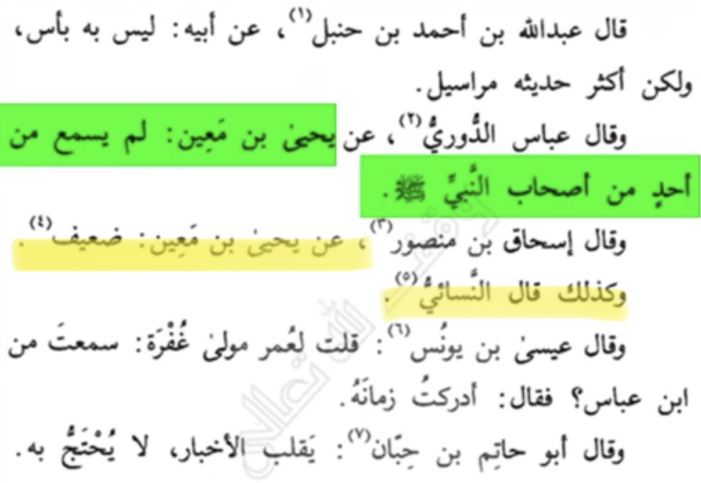
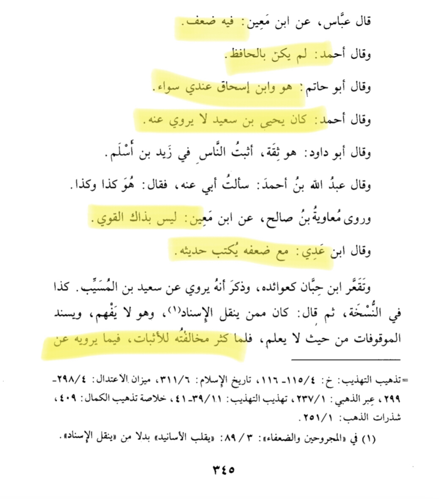
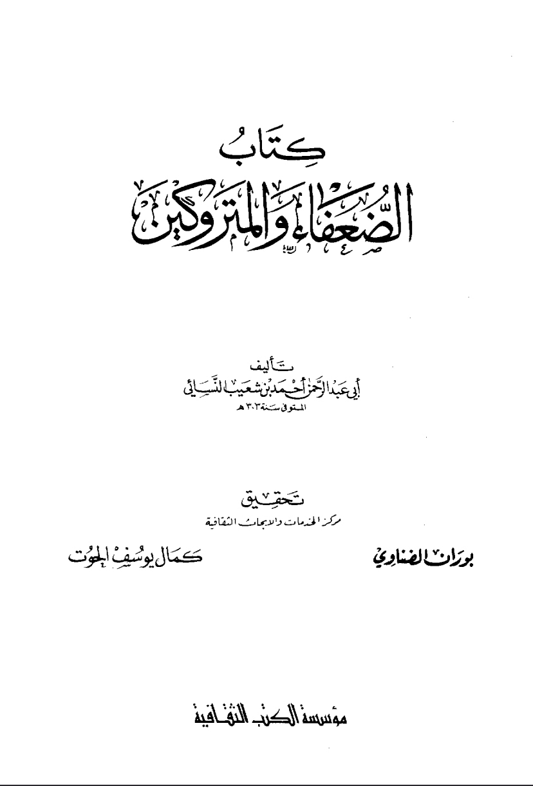
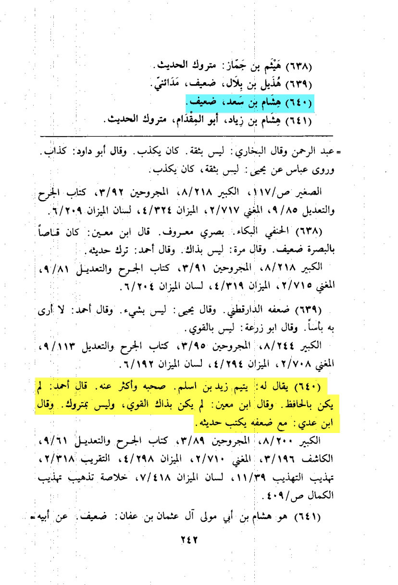
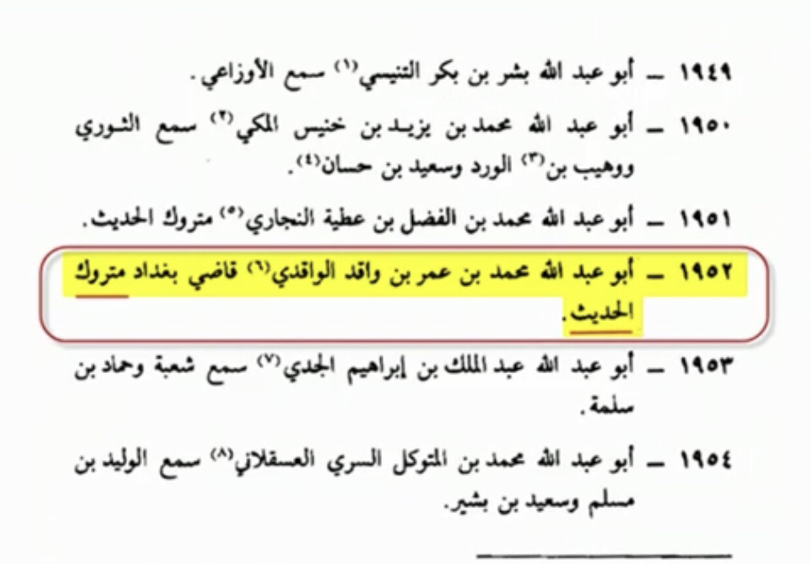
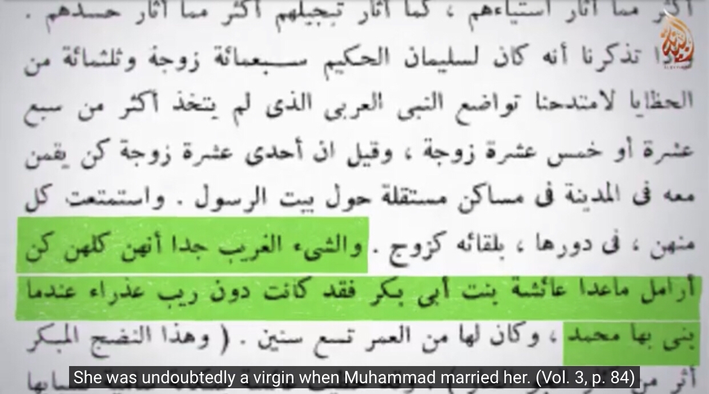

this is the narration used as tafsir for (Quran 4:54)
-Source: Tafsir al-nasikh w al-mansoukh ibn jaafar volume 1 page 635

Before getting into the sanad and the authenticity of the story not all people accused him just Jews and are Jews known to be trust worthy people ?
In John 8:41 the Jews accused Jesus of being son of zina (adultery) coming from premarital sex and not the son of God
Translation: “it is like they (I.e Jews) said to him we only have one father that is God not like you son of adultery”
-Source: Interpretation of the gospel of John (Tadros maltis) volume 1 page 631

Even if the narration is authentic there wouldn’t be a problem. But actually the narration is not authentic for the following reasons Here are the first three in the chain of narration of the hadith found in every few sources of the story (same people every narration found):

Lets start by omar mawla ghufra
Translation: “Umar bin ghufra didn’t hear from the prophet or his companions he (I.e yehia bin maain and nisa’i and all ahlul ilm) said: Da’if (weak narrator)
-Source: Tahzib al-kamal fi asmaa al-rijal Abi al hajaj (RH) volume 21 page number 422 person number 4271

He isn’t the only problem here
Hisham bin saad is also in the chain
Translation: “yehia bin maain said he has weakness
Ahmed said: da’if (weak)
Ahmed said: yehia bin saaid didn’t take from him
Abu hatim said: he and ibn ishaaq are one for me (if he says an that he says in this hadith the hadith automatically is da’if (weak)
Ibn ady said: he has weakness
nisai said : da’if (weak)
I (Al-Dhahabi (RH)) conclude that he is da’if (weak)
-Source: Syar aalam al-nubalaa (Al-Dhahabi) volume 7 page number 344 to page number 345 this is page number 345 person number 126 by the name “hisham bin saad”

He is also weakned in tahrir taqrib al-tahzib and by al-nasa’i


Muhammed bin omar Al-wakidi is in the chain also
Translation: “imam muslim and bukhari said he muhammed bin umar Al-Wakidi is matrook al-hadith”
-Source: Al-kinaa w al-asmaa (imam muslim) volume 1 page 499 person number 1952 by name abu Abdullah bin umar al-Wakidi

As we the hadith is da’if because of 6 problems:
1-Umar mawla guffra is da’if
2-it is mursal umar didn’t meet the prophet nor the sahaba
3-hisham bin saad is da’if
4-Al-Wakidi is matrook
5-shaz narration critisized by everyone al-tabari mentions some isnad in his tafsir of this verse and he disproves them
Now was the prophet really lustful ?
Lets see a quote by a non Muslim historian
Translation: “surprisingly all of them (I.e prophets wives) were old and non virgins except for aisha who was a virgin very surprising he didn’t marry the most beautiful girls on the contrary of Solomon”
Source: The history of the decline and fall of the Roman Empire (Edward Gibbon) volume 3 page number 84

If he was truly lustful he would marry young women all his wives except Aisha (AS) where either older than him or non virgins why would he do that he truly had a reason would a lustful man leave the choice to his wives to leave him like nasa’i 3203 , the prophet wouldn’t let himself a countstop as Allah commands he can’t divorce his wives no more or marry more as in Quran 33:51-53 why would he put himself into that if he was lustful
Truly he married each for a particular reason for example he married Zainab to teach us that adopted son isn’t a real son (33:37) he married juwairiyah bint al-harith to teach the Muslims to free all of their slaves , even in a narration in al-bukhari 5029 a woman wants to marry the prophet he says I am not in need of women why would he do that if he was lustful ?
Now if he was that lustful how did he treat them
Now lets see how they felt
Narrated Hisham b. 'Urwah:
On the authority of his father that 'Aishah said: O my nephew, the Messenger of Allah (ﷺ) did not prefer one of us to the other in respect of his division of the time of his staying with us. It was very rare that he did not visit us any day (i.e. he visited all of us every day). He would come near each of his wives without having intercourse with her until he reached the one who had her day and passed his night with her.
-Source: Sunan Abi Dawud 2135
Grade: Sahih (authentic) (Darussalam)
It was narrated from ‘Urwah that ‘Aa’ishah told him about the women’s oath of allegiance: “The Messenger of Allaah (peace and blessings of Allaah be upon him) never touched any woman with his hand. He would explain to the woman what the oath of allegiance implied, and when she accepted, he would say ‘Go, for you have given your oath of allegiance.’”
Narrated by Muslim, 1866